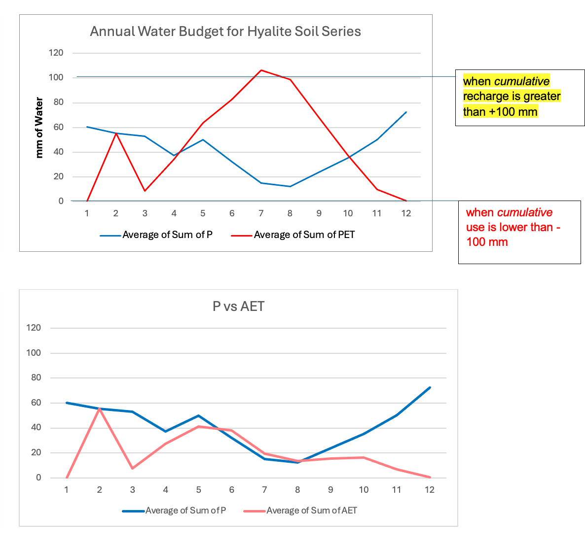

Reading the Hyalite annual water-budget charts
The supplied figure contains two monthly comparisons. The first chart compares precipitation (P) with potential evapotranspiration (PET). The second compares precipitation (P) with actual evapotranspiration (AET).

The annotations on the first chart state that cumulative recharge is greater than +100 mm and cumulative use is lower than −100 mm. The figure does not provide a separate table of exact monthly values, so this post does not assign precise monthly totals.
Comparing P with PET gives a view of precipitation relative to potential atmospheric water demand. Comparing P with AET shows precipitation relative to actual evapotranspiration in the plotted data. The chart should be presented alongside its original labels and units (mm of water).
Four annual water-budget designations
- Surplus (S): Precipitation exceeds what the soil and plants can use, and the soil is at capacity.
- Utilization (U): Plants use water stored in the soil as precipitation falls below demand.
- Recharge (R): Precipitation replenishes soil water storage after a period of depletion.
- Deficit (D): Water demand exceeds available water, and the soil cannot supply enough moisture.
Monthly designations for the Hyalite soil series
Based on the annual water-budget graphs, the recommended monthly designations are:
- January–February: Recharge (R)
- March–May: Surplus (S)
- June–August: Utilization (U)
- September–December: Surplus (S)
No months are designated as Deficit (D), because the cumulative water-use line does not fall below −100 mm on the provided chart.